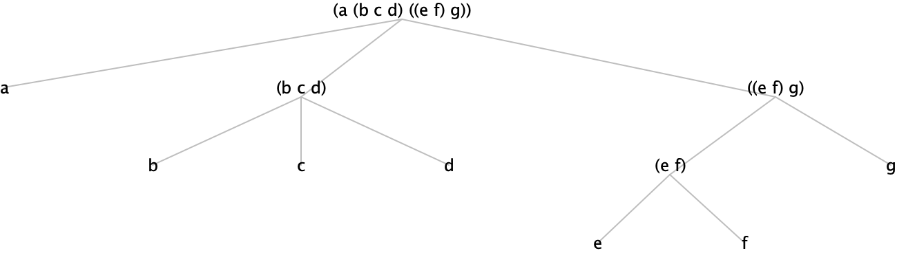
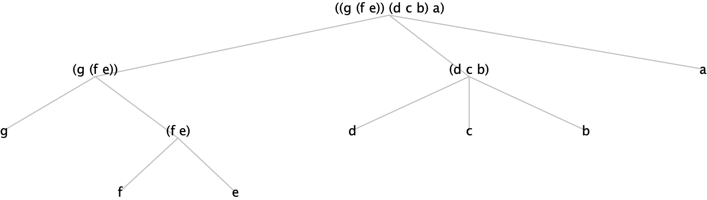

Chapitre 06: Récursivité structurelle
Principe de la récursivité structurelle
Le système "accepte" toute définition récursive syntaxiquement correcte, même si la procédure associée donne lieu
à des calculs infinis. L'utilisateur doit savoir si, dans un domaine donné, le calcul se terminera toujours.
Pour les domaines usuels, des schémas existent qui garantissent la terminaison.
Cas particulier : les schémas structurels, basés sur la manière dont les objets du domaine de calcul sont
construits.
Le processus d'évaluation réduit le calcul de $f(v)$ au calcul de $f(v_1),\ldots,f(v_n)$ où les $v_i$ sont des composants
(immédiats) de $v$. Cette technique est sûre tant que l'on se limite aux domaines dont les objets ont un nombre
fini de composants (immédiats ou non), clairement identifiés.
Chapitre 06: Récursivité structurelle
Principe de la récursivité structurelle
Domaines usuels de base :
- Nombres naturels
- Listes
- Expressions symboliques
En plus : domaines dérivés des précédents, surtout par produit cartésien.
Récursivité structurelle : les naturels I
Conceptuellement, les naturels sont construits à partir de $0$ et de la fonction successeur $succ$.
$0$ n'a pas de composant (objet de base) ; $16$ est le seul composant immédiat de $17 = succ(16)$.
Schéma de base :
(define F
(lambda (n u)
(if (zero? n)
(G u)
(H (F (- n 1) (K n u))
n
u))))
Les fonctions G, H et K sont supposées déjà définies.
u représente une suite de 0, 1 ou plusieurs arguments ; (une suite de 0 argument se réduit à
rien !).
Le calcul de (F 0 u) n'implique pas d'appel récursif.
Le calcul de (F n u) implique celui de (F (- n 1) (K n u)) si n n'est pas nul.
Récursivité structurelle : les naturels II
Schéma de base simplifié :
Le cas où u est absent suffit souvent :
(define F
(lambda (n)
(if (zero? n)
c ; le numéro n, une constante, ...
(H (F (- n 1))
n))))
Récursivité structurelle : les naturels III
Exemple :
(define harmonic-sum
(lambda (n)
(if (zero? n)
0
(+ (/ 1.0 n)
(harmonic-sum (- n 1))))))
> (harmonic-sum 5)
2.283333333333333
(define F
(lambda (n)
(if (zero? n)
c
(H (F (- n 1))
n))))
(define c 0)
(define H
(lambda (x n)
(+ (/ 1.0 n) x)))
Remarque : nous discuterons du tail recursion en plus de détail plus tard dans ce cours.
Récursivité structurelle : les naturels IV
Exemple :
(define mult
(lambda (n u)
(if (zero? n)
0
(+ u (mult (- n 1) u)))))
> (mult 5 4)
20
(define F
(lambda (n u)
(if (zero? n)
(G u)
(H (F (- n 1) (K n u))
n
u))))
(define G (lambda (u) 0))
(define K (lambda (n u) u))
(define H
(lambda (x n u)
(+ u x)))
Récursivité structurelle : les naturels V
Exemple :
(define fact
(lambda (n)
(if (zero? n)
1
(* n (fact (- n 1))))))
> (fact 5)
120
Récursivité structurelle : les naturels VI
Exemple :
(define cbin
(lambda (n u)
(if (zero? n)
1
(/ (* (cbin (- n 1) (- u 1)) u) n))))
Attention au noms des variables : (cbin n u) à
$\binom{u}{n} = \frac{u!}{n!(u-n)!} = \prod_{i=1}^{n}\frac{u+1-i}{i}$
> (cbin 3 4)
4
Récursivité structurelle : les naturels VII
Les schémas sont d'abord des schémas de pensée ; ils suggèrent d'exprimer $f(n)$ en termes d'expressions indépendantes de f, mais aussi
de $f(n - 1)$, si $n \gt 0$. Les schémas imposent en outre la syntaxe du programme : le programmeur doit seulement
définir les fonctions G, H et K.
Exemple :
(define cbin
(lambda (n u)
(if (zero? n)
1
(/ (* (cbin (- n 1) (- u 1)) u) n))))
...
Récursivité structurelle : les naturels VIII
; (define cbin
; (lambda (n u)
; (if (zero? n)
; 1
; (/ (* (cbin (- n 1) (- u 1)) u) n))))
(define F
(lambda (n u)
(if (zero? n)
(G u)
(H (F (- n 1) (K n u)) n u))))
(define G (lambda (u) 1))
(define K (lambda (n u) (- u 1)))
(define H (lambda (r n u) (/ (* r u) n)))
(define cbin F)
Listes : représentation arborescente
Il existe une correspondance naturelle entre les listes et les arbres. Chaque nœud de l'arbre a un nombre fini
quelconque de fils.
ATTENTION ! Cette représentation commode des listes n'est pas celle employée en machine !
Remarque. Un arbre réduit à sa racine et étiqueté par un symbole atomique ne sera pas représenté par une liste
mais par ce symbole.
Remarque. Conceptuellement, seuls les nœuds terminaux de l'arbre représenté ici sont étiquetés ; les étiquettes
attachées aux nœuds internes sont synthétisées à partir des étiquettes des nœuds successeurs.
Les arbres dont les nœuds internes sont étiquetés (indépendamment des feuilles) forment un autre type de
données.
Listes : récursivité superficielle I
[[l]] est soit (), soit [[(cons (car l) (cdr l))]].
Toute liste s'obtient à partir de () et de cons ;
la règle de construction est simple : ([[a1]] [[a2]] ... [[an]])
s'obtient en évaluant
(cons a1 (cons a2 (cons ... (cons an '()) ...)))
Schéma de base :
(define F
(lambda (l u)
(if (null? l)
(G u)
(H (F (cdr l) (K l u))
l
u))))
Les fonctions G, H et K sont supposées déjà définies ; u représente une suite de 0, 1 ou plusieurs arguments.
Calculer (F '() u) n'implique pas d'appel récursif.
Calculer (F l u) implique l'appel (F (cdr l) (K l u)) si l n'est pas vide.
Listes : récursivité superficielle II
Le cas où $|u| = 0$ suffit souvent :
(define F
(lambda (l)
(if (null? l)
c
(H (F (cdr l))
l))))
Listes : récursivité superficielle III
(define length
(lambda (l)
(if (null? l) 0 (+ 1 (length (cdr l))))))
> (length '(f o o bar))
4
(define append
(lambda (l v)
(if (null? l) v (cons (car l) (append (cdr l) v)))))
> (append '(f o o) '(bar))
(f o o bar)
Listes : récursivité superficielle IV
(define reverse
(lambda (l)
(if (null? l) '() (append (reverse (cdr l)) (list (car l))))))
> (reverse '(f o o bar))
(bar o o f)
(define map
(lambda (f l)
(if (null? l) '() (cons (f (car l)) (map f (cdr l))))))
> (map (lambda (x) (* x x)) '(1 2 3 4 5 6))
(1 4 9 16 25 36)
Listes : récursivité superficielle V
(define map
(lambda (f l)
(if (null? l) '() (cons (f (car l)) (map f (cdr l))))))
s'obtient en instanciant le schéma
(define F
(lambda (l u)
(if (null? l)
(G u)
(H (F (cdr l) (K l u))
l
u))))
(define G (lambda (u) '()))
(define K (lambda (l u) u))
(define H
(lambda (r l u)
(cons (u (car l)) r)))
(define map
(lambda (f l) (F l f)))
Retournement superficiel ("reverse")
(define reverse
(lambda (l)
(if (null? l) '() (append (reverse (cdr l)) (list (car l))))))
L'appel récursif porte sur le cdr seul.
> (reverse '(a (b c d) ((e f) g)))
(((e f) g) (b c d) a)
Argument :

Résultat :

Tri par insertion I
(define insert
(lambda (x l comp) ;; comp est un argument procédural
(cond ((null? l) (list x))
((comp x (car l)) (cons x l))
(else (cons (car l) (insert x (cdr l) comp))))))
> (insert 3 '(0 2 3 3 5 7 8 9) <)
(0 2 3 3 3 5 7 8 9)
Où ce "3" a-t-il été inséré ?
Tri par insertion II
(define sort
(lambda (l comp) ;; comp est un argument procédural
(if (null? l)
l
(insert (car l) (sort (cdr l) comp) comp))))
> (sort '(8 3 5 7 2 3 9 0) <=)
(0 2 3 3 5 7 8 9)
> (sort '(8 3 5 7 2 3 9 0) >=)
(9 8 7 5 3 3 2 0)
Tri par insertion III
; (define insert
; (lambda (x l comp) ;; comp est un argument procédural
; (cond ((null? l) (list x))
; ((comp x (car l)) (cons x l))
; (else (cons (car l) (insert x (cdr l) comp))))))
(define F
(lambda (l u1 u2)
(if (null? l)
(G u1 u2)
(H (F (cdr l) (K1 l u1 u2) (K2 l u1 u2)) l u1 u2))))
(define G (lambda (u1 u2) (list u1)))
(define H (lambda (r l u1 u2) (if (u2 u1 (car l)) (cons u1 l) (cons (car l) r))))
(define K1 (lambda (l u1 u2) u1))
(define K2 (lambda (l u1 u2) u2))
(define insert (lambda (x l comp) (F l x comp)))
Tri par insertion IV
; (define sort
; (lambda (l comp) ;; comp est un argument procédural
; (if (null? l)
; l
; (insert (car l) (sort (cdr l) comp) comp))))
(define F
(lambda (l u)
(if (null? l)
(G u)
(H (F (cdr l) (K l u)) l u))))
(define G (lambda (u) '()))
(define H (lambda (r l u) (insert (car l) r u)))
(define K (lambda (l u) u))
(define sort (lambda (l comp) (F l comp)))
Tri par insertion (ordre lexicographique) - I
> (sort '("bb" "ac" "bc" "acb") string<=?)
("ac" "acb" "bb" "bc")
Tri par insertion (ordre lexicographique) - II
(define lex
(lambda(str-ord iden) ;; arguments procéduraux
(lambda (u v)
(cond ((null? u) #t)
((null? v) #f)
((str-ord (car u) (car v)) #t)
((iden (car u) (car v)) ((lex str-ord iden) (cdr u) (cdr v)))
(else #f)))))
(define numlex (lex < =))
(define alpha (lex string<? string=?))
> (sort '((2 3) (1 4) (2 3 2) (1 3)) numlex)
((1 3) (1 4) (2 3) (2 3 2))
> (sort '(("acb" "ac") ("ac" "acb") ("ac")) alpha)
(("ac") ("ac" "acb") ("acb" "ac"))
Récursivité profonde sur les listes I
Schéma de base :
(define F
(lambda (l u)
(cond ((null? l) (G u))
((atom? (car l))
(H (F (cdr l) (K l u))
l
u))
((list? (car l))
(J (F (car l) (Ka l u))
(F (cdr l) (Kd l u))
l
u)))))
Schéma simplifié :
(define F
(lambda (l)
(cond ((null? l) c)
((atom? (car l))
(H (F (cdr l)) l))
((list? (car l))
(J (F (car l))
(F (cdr l))
l)))))
Remarque. On exclut (provisoirement) de rencontrer dans la liste l des objets qui ne soient ni des listes ni des atomes.
Récursivité profonde sur les listes II
(define flat-l
(lambda (l)
(cond ((null? l) '())
((atom? (car l))
(if (null? (car l))
(flat-l (cdr l))
(cons (car l)
(flat-l (cdr l)))))
((list? (car l))
(append (flat-l (car l))
(flat-l (cdr l)))))))
Attention ! En Racket, la fonction atom? n'existe pas.
Vous pouvez le définir en tant que :
(define atom?
(lambda (x)
(and (not (null? x))
(not (pair? x)))))
> (flat-l 5)
car: contract violation
expected: pair?
given: 5
> (flat-l '())
()
> (flat-l '(0 (1 2) ((((3))) 4) 5))
(0 1 2 3 4 5)
Récursivité profonde sur les listes III
Les listes ont pour éléments des objets d'un certain type (par exemple, des atomes) et aussi d'autres listes. On peut
décider d'adjoindre à ce domaine celui des objets (atomes). Cela revient à admettre les arbres réduits à une
racine (qui est en même temps l'unique feuille).
Les schémas précédents s'adaptent facilement.
(define F
(lambda (l)
(cond ((null? l) c)
((atom? (car l))
(H (F (cdr l)) l))
((list? (car l))
(J (F (car l))
(F (cdr l))
l)))))
(define F
(lambda (l)
(cond ((null? l) c)
((atom? l)
(G l))
((list? l)
(J (F (car l))
(F (cdr l))
l)))))
Remarque. Le remplacement de list? par pair? améliore l'efficacité.
Récursivité profonde sur les listes IV
(define flat-le
(lambda (l)
(cond ((null? l) '())
((atom? l) (list l))
((list? l) (append (flat-le (car l)) (flat-le (cdr l)))))))
> (flat-le 5)
(5)
> (flat-le '())
()
> (flat-le '(0 (1 2) ((((3))) 4) 5))
(0 1 2 3 4 5)
Retournement profond ("deeprev")
(define deeprev
(lambda (l)
(cond ((null? l) '())
((atom? l) l)
((list? l)
(append (deeprev (cdr l))
(list (deeprev (car l))))))))
L'appel récursif porte sur le car et le cdr.
Argument :

Résultat :

Remarque sur les schémas
Suivre un schéma "à la lettre", c'est-à-dire se limiter strictement à instancier les paramètres qu'il contient, rend
la programmation particulièrement méthodique et sûre.
On peut cependant, pour diverses raisons, garder "l'esprit" d'un schéma sans respecter la lettre (sa syntaxe
précise). Un exemple classique est le programme flatten, version équivalente mais plus
efficace de flat-le :
(define flatten
(lambda (l u)
(cond ((null? l) u)
((atom? l) (cons l u))
((list? l) (flatten (car l) (flatten (cdr l) u))))))
On montre facilement que les valeurs de (flatten l u) et de
(append (flat-le l) u) sont égales pour toutes listes l et u ;
en particulier, (flatten l '()) et
(flat-le l) ont même
valeur. Par contre, flatten n'est pas une instance du schéma, même s'il s'en inspire nettement.
On concilie méthode, discipline et créativité...
Récursivité structurelle généralisée I
Le principe de la récursivité structurelle est que la structure du programme
est calquée sur celle des données.
Exprimer $f(x,...)$ en termes de $\{f(y,...) : y \prec x\}$
où $y \prec x$ signifie $y$ composant de $x$.
On peut généraliser :
-
Admettre aussi les composants non immédiats :
(- n 1), mais aussi (- n 2), (/ n 2),...(cdr l), mais aussi (cddr l),...
- Admettre plusieurs appels récursifs.
- Admettre les appels imbriqués.
La terminaison reste garantie mais pas l'efficacité !
Récursivité structurelle généralisée II
Attention aux erreurs grossières, telles les évaluations de (f (- n 2)) avec $n \leq 1$, et de
(f (cddr l)) où l comporte moins de deux éléments.
(define fib
(lambda (n)
(if (< n 2)
n
(+ (fib (- n 1)) (fib (- n 2))))))
Pour quoi est-ce que fib est inefficace ?
(define exp
(lambda (m n)
(cond ((zero? n) 1)
((even? n) (exp (* m m) (/ n 2)))
((odd? n) (* m (exp m (- n 1)))))))
Pour quoi est-ce que exp est très efficace ?
Récursivité structurelle mixte
Le principe de la récursivité structurelle est : Exprimer $f(x,...)$ en termes de $\{f(y,...) : y \prec x\}$ ;
l'induction porte sur un seul argument.
Le principe de la récursivité structurelle mixte est : Exprimer $f(x_1,x_2,...)$ en termes de
$\{f(y_1,x_2,...),f(x_1,y_2,...),f(y_1,y_2,...) : y_1 \prec x_1 \wedge y_2 \prec x_2\}$. L'induction porte sur plusieurs
arguments; si $f(a,b)$ dépend de $f(c,d)$, alors $c \prec a \wedge d \preceq b$ ou $c \preceq a \wedge d \prec b$.
La terminaison reste garantie.
(define gcd
(lambda (x y)
(cond ((= x y) x)
((> x y) (gcd (- x y) y))
((< x y) (gcd x (- y x))))))
Exemples classiques (voir plus loin) : knapsack, money change,...
Séparation fonctionnelle I
On peut “dérécursiver” le schéma classique
$fact(n) := \text{if n = 0 then 1 else } n \times fact(n - 1)$ en l'écriture
$fact_m(n) := \text{if n = 0 then 1 else } n \times fact_{m-1}(n-1)$.
La récursivité revient (sous forme dégénérée) pour définir globalement les fonctions $fact_m$ :
(define f
(lambda (m c)
(if (zero? m)
c
(f (- m 1) (lambda (n) (if (= n 0) 1 (* n (c (- n 1)))))))))
Si [[m]] = $m$ et [[c]] = $fact_p$, alors
[[(f m c)]] = $fact_{p+m}$
(define fact0 'emptyfunction)
(define fact (lambda (n) ((f (+ n 1) fact0) n)))
On observe que $fact_m$ a pour domaine $\{0,1,...,m - 1\}$. Sur ce domaine, on a $fact_m(n) = n!$.
Séparation fonctionnelle II
;; Si [[m]] = m et [[c]] = fact_{p}, alors [[(f m c)]] = fact_{p+m}
(define f
(lambda (m c)
(if (zero? m)
c
(f (- m 1) (lambda (n) (if (= n 0) 1 (* n (c (- n 1)))))))))
(define fact0 'emptyfunction)
(define fact (lambda (n) ((f (+ n 1) fact0) n)))
Séparation fonctionnelle III
Exemples :
> (define fact8 (f 8 fact0))
...
> (fact8 7)
5040
> (fact8 8)
application: not a procedure;
expected a procedure that can be applied to arguments
given: emptyfunction
> (fact 8)
40320
Séparation fonctionnelle IV
On a séparé
- le calcul de la fonction $fact_p$
- l'application de cette fonction à un argument. On a $fact(n) = fact_p(n)$ si $p \gt n$; on choisit $p = n+1$.
Cette technique de séparation fonctionnelle n'apporte rien dans le cas très simple de la fonction factorielle
mais, dans le cadre général de la définition récursive de fonctions, cette technique sera parfois très
utile !
Plus généralement, l'introduction de paramètres fonctionnels et/ou de fonctionnelles auxiliaires définies
récursivement est une technique importante.
Séparation fonctionnelle V - Processus de calcul
(define fact (lambda (n) ((f (+ n 1) fact0) n)))
(define f
(lambda (m c)
(if (zero? m)
c
(f (- m 1) (lambda (n) (if (= n 0) 1 (* n (c (- n 1)))))))))
(fact 8)
((f 9 fact0) 8)
((f 8 (lambda (n) (if (= n 0) 1 (* n (fact0 (- n 1)))))) 8)
((f 8 fact1) 8)
...
((f 0 fact9) 8)
(fact9 8)
(* 8 (* ... 1))
...
(* 8 5040)
40320
L'expansion fonctionnelle précède le calcul arithmétique.
Séparation fonctionnelle VI
Double comptage :
> (count '(a b a c d a c) 'a)
(3 . 4)
3 occurrences de "a", 4 autres occurrences.
Solution simple : utiliser deux fonctions auxiliaires.
(define count0 (lambda (l s) (cons (c-eq l s) (c-dis l s))))
Problème : on parcourt la liste l deux fois.
Séparation fonctionnelle VII
Solution naïve : utiliser le schéma habituel.
(define count1
(lambda (l s)
(if (null? l)
(cons 0 0)
(if (eq? (car l) s)
(cons (1+ (car (count1 (cdr l) s))) (cdr (count1 (cdr l) s)))
(cons (car (count1 (cdr l) s)) (1+ (cdr (count1 (cdr l) s))))))))
L'inefficacité est catastrophique, mais on peut y remédier simplement.
Séparation fonctionnelle VIII
La séparation fonctionnelle est une solution possible :
(define c2 ;; écrire une spécification !
(lambda (l s c)
(if (null? l)
c
(if (eq? (car l) s)
(c2 (cdr l) s (lambda (u) (c (cons (1+ (car u)) (cdr u)))))
(c2 (cdr l) s (lambda (u) (c (cons (car u) (1+ (cdr u))))))))))
(define id (lambda (v) v))
(define count2 (lambda (l s) ((c2 l s id) '(0 . 0))))
Si $l$ est la longueur de la liste l, les temps d'exécution
de (count0 l) et de (count2 l) sont proportionnels
à $l$ ; celui de (count1 l) est proportionnel à $2^l$.
(On verra d'autres solutions pour ce probl`eme plus loin.)
Séparation fonctionnelle IX
Spécification de c2 :
(define (cx p1) ;; uniquement pour faciliter la sp ́ecification
(lambda (p2) (cons (+ (car p1) (car p2)) (+ (cdr p1) (cdr p2)))))
Si [[(count2 l s)]] = [[(cons a b)]],
alors [[(c2 l s (cx (cons u v)))]] = [[(cx (cons (+ u a) (+ v b)))]]
;; Si [[(count2 l s)]] = [[(cons a b)]],
;; alors [[(c2 l s (cx (cons u v)))]] = [[(cx (cons (+ u a) (+ v b)))]]
(define c2
(lambda (l s c)
(if (null? l)
c
(if (eq? (car l) s)
(c2 (cdr l) s (lambda (u) (c (cons (1+ (car u)) (cdr u)))))
(c2 (cdr l) s (lambda (u) (c (cons (car u) (1+ (cdr u))))))))))
Séparation fonctionnelle X
Produit de liste : $l \to \prod_{x \in l} x$.
(define pl1
(lambda (l)
(cond ((null? l) 1)
((zero? (car l)) 0)
(else (* (car l) (pl1 (cdr l)))))))
Si un facteur est nul, comment éviter toutes les multiplications ? Ici aussi,
la séparation fonctionnelle permet une solution.
(define p2 ;; écrire une spécification !
(lambda (l c)
(cond ((null? l) c)
((zero? (car l)) (lambda (v) 0))
(else (p2 (cdr l) (lambda (u) (* (car l) (c u))))))))
(define pl2 (lambda (l) ((p2 l id) 1)))
(On verra d'autres solutions pour ce problème plus loin.)
Séparation fonctionnelle XI
Spécification de p2 :
Si [[l]] est une liste de nombres dont le produit vaut $a$,
et si [[c]] est la fonction $[x \to bx]$,
alors [[(p2 l c)]] est la fonction $[x \to abx]$.
;; Si [[l]] est une liste de nombres dont le produit vaut a,
;; et si [[c]] est la fonction [x -> bx],
;; alors [[(p2 l c)]] est la fonction [x -> abx].
(define p2
(lambda (l c)
(cond ((null? l) c)
((zero? (car l)) (lambda (v) 0))
(else (p2 (cdr l) (lambda (u) (* (car l) (c u))))))))